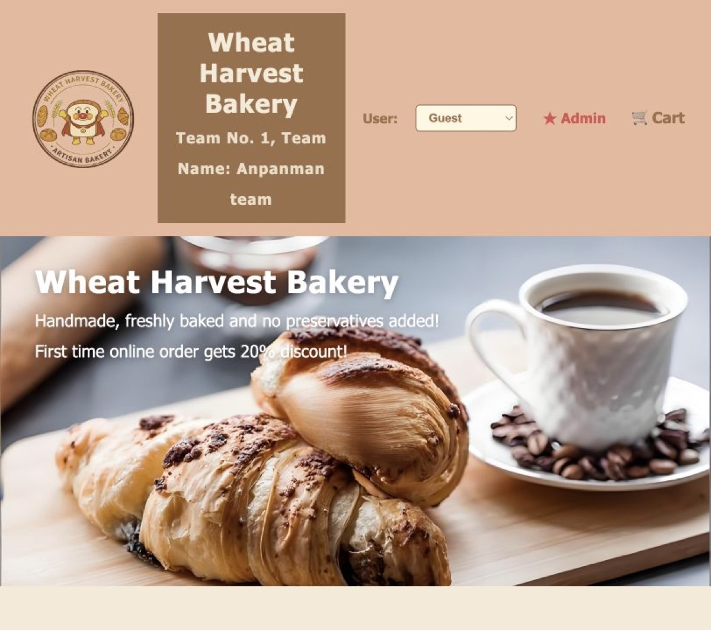

FULL-STACK E-COMMERCE SYSTEM
BAKERY
E-COMMERCE
WEBSITE

从计划到交付
规划 Timeline 与开发任务，组织 Sprint Planning、Daily Meeting 和 Sprint Review，推动首页、产品、购物车、支付及后台管理等核心流程按期完成。
项目采用 Express 提供页面路由与 API，使用 MySQL 管理商品、购物车和订单数据，并支持访客购物流程与订单管理。